We have used the Pima Indian Diabetes Dataset (PIDD). The data is collected from 768 female
patients of Pima Indian heritage who are 21 years old or older. The dataset is arranged in 9
features as summarized in the table below. Moreover, we found out that 35% of the patients
are diabetic while the remaining are non-diabetic, thereby signaling the existence of a
moderate imbalance in the data.
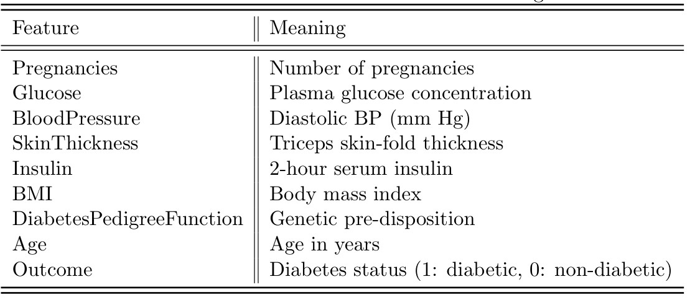
The specific patterns of the underlying dataset are presented in the following table.
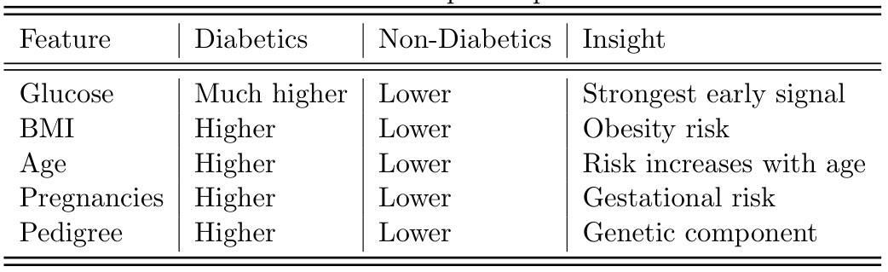
At a first glance, it seems that there are no NaNs which could be misleading. There are
also a lot of zeros in the data, see the table below, which makes us a bit confused, as several medical features cannot
be zero physiologically. Since we are dealing with PIDD, we need to watch out for the invalid
zeros in Glucose, BloodPressure, SkinThickness, Insulin and BMI. As suspected, we found a
very important information which we summarize in the table below. This table tells us
that, among other things, nearly 30% of SkinThickness and 49% of Insulin
go missing. Properly treating these incidents will dramatically improve model reliability
where as ignoring it will definitely lead to false predictions. Data imputation is needed here
to properly deal with the missing values. Since median is robust to skewed medical variables and
a best practice in this domain, all the missing values are replaced by the median of their
respected features.
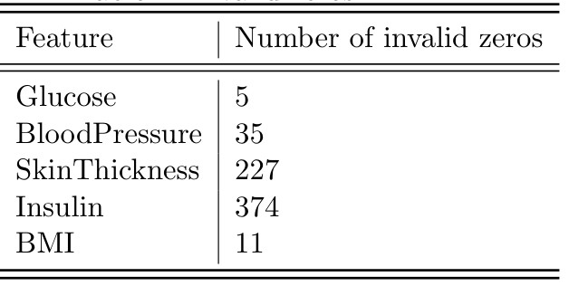
After some adjustments, we used Logistic Regression (LR) to simply have a good understanding of the
prediction scenario. The LR model provided the risk factors in descending order as depicted
below which reveal that Glucose (strongest predictor), BMI + Age (compounding risk),
DiabetesPedigreeFunction (genetic susceptibility).
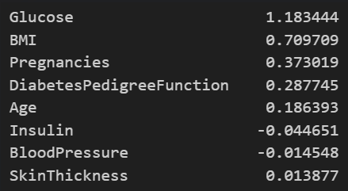
Moreover, we were able to gain more insight by using the Random Forest (RF) classifier.
With RF we have observed that Glucose is the single most powerful early indicator,
BMI and Age amplify risk together, Genetic predisposition is non-negligible and Recall-optimized
models reduce missed diabetes cases significantly.
We came to the conclusion that, compared to LR, RF is able to capture nonlinear interactions (BMI + Age),
improves recall score slightly, results are less interpretable but have stronger predictive power.
For PIDD, the most informative "relative plots" are feature distributions
split by Outcome (0 vs 1). These let us visually compare diabetic vs non-diabetic patients feature by feature,
which is exactly what we want for early detection insight.
Since KDE is ideal for medical risk comparison, we have plotted KDE distributions for each feature,
separated by Outcome as shown below. The results tell us:
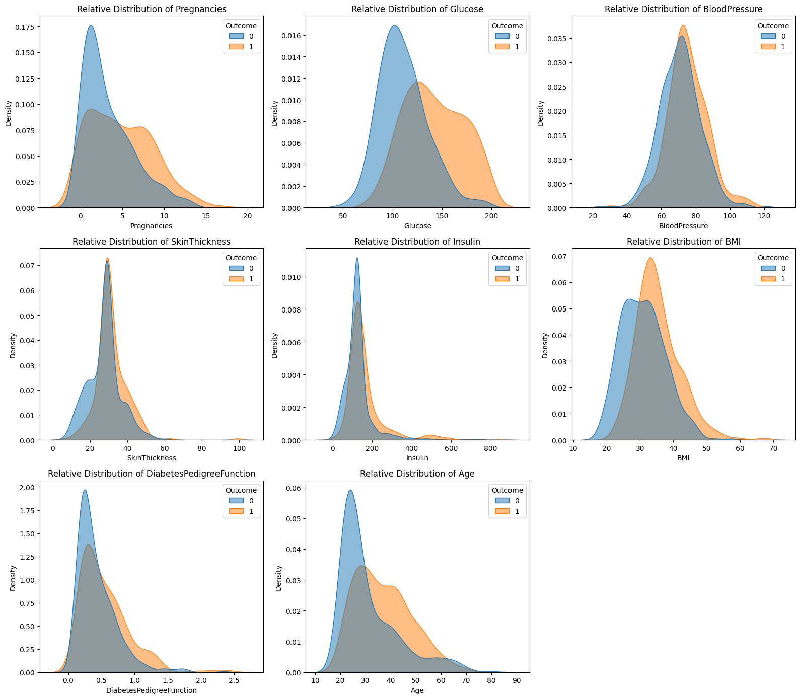
1. Glucose: Most important feature, diabetic curve shifts strongly right and minimal overlap at
high glucose.
2. BMI: Diabetics concentrated at higher BMI, clear obesity-related risk, it an
important modifiable risk factor.
3. Age: Diabetes probability increases with age, it is a progressive metabolic risk.
4. DiabetesPedigreeF: Long right tail for diabetics, indicates genetic susceptibility,
non-obvious but important signal.
5. Insulin and SkinThickness: Heavier overlap, they both are less predictive alone.
6. BloodPressure: Significant overlap, weak standalone predictor, secondary risk factor.
7. Pregnancies: Higher pregnancies --- higher diabetes risk, useful for population-specific insight.
We now change the model to XGBoost for a multitude of reasons including
its ability to capture nonlinear effects, handle features automatically, produce strong recall score,
and integrate perfectly with SHAP.
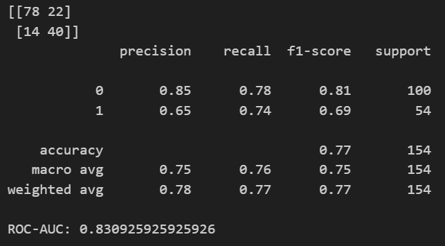
The results in the above figure tell us that recall for the diabetes class has increased, a good sign;
ROC-AUC has increased, another good sign, and fewer false negatives than LR and RF.
Now, we combine XGBoost with SHAP as the merger is claimed to be the GOLD standard for explainable ML on
tabular data. We did a train-test split and used the training data to do summary plot of the SHAP
values as shown below. In the figure the risk factors are ranked as per their influence, confirming Glocuse as
the dominant early biomarker.
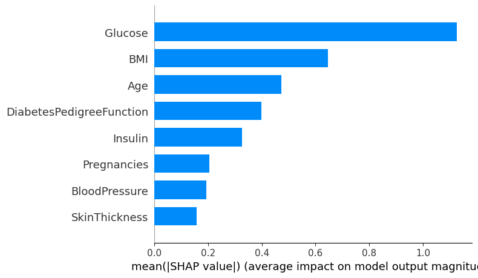
A nice looking 'bee swarm' plot is depicted in the figure below which is interpreted as:
1. High glucose --- strong push toward diabetes
2. High BMI + older age --- nonlinear risk amplification
3. Low values --- protective effect
This shows how risk changes, not just which features matter.
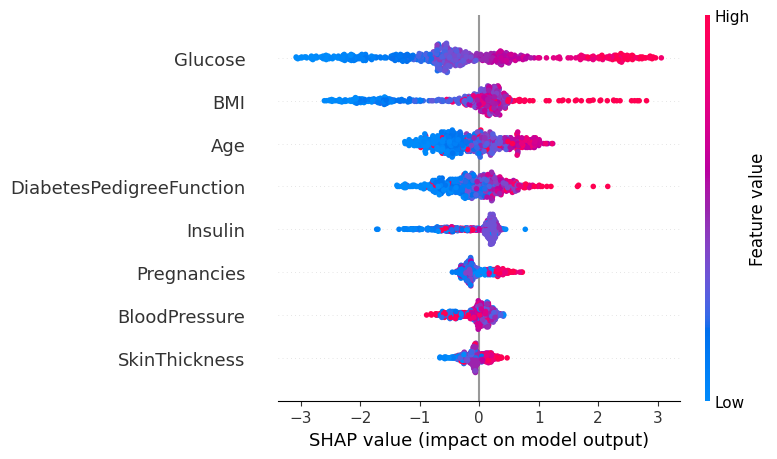
Now we visualize how the risk scores translate into decisions using the individual XGBoost risk scores.
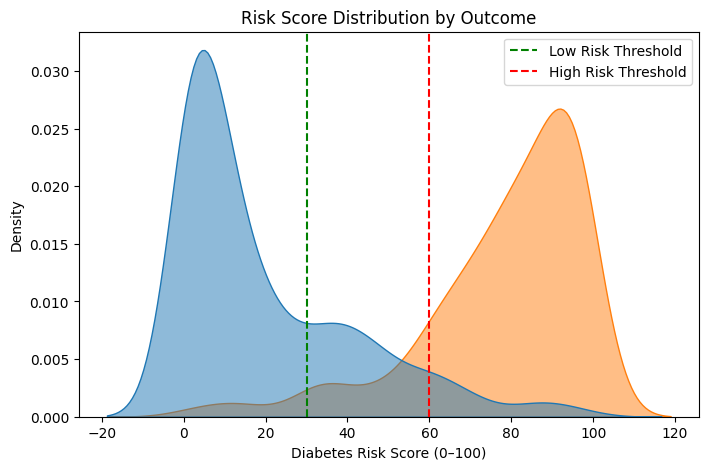
The results in the above figure mean:
1. Diabetics dominate right side
2. Non-diabetics dominate left side
3. Overlap region implies diagnostic uncertainty
This tells us that thresholds convert probabilities into actionable rules.
Moreover, the individual scores help us to identify which patient falls in which risk threshold.
The diabetic risk scores have been calculated for each individual and depicted in the following figure
after arranging them in categories.
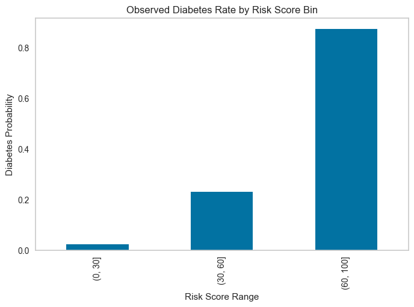
The results in the above figure means: Diabetes rate increases monotonically;
High-risk bins have very high prevalence; XGBoost confirms good calibration and it is deal
for population screening.
We have also categorized the risc score of the patients and summarized it in the table below.
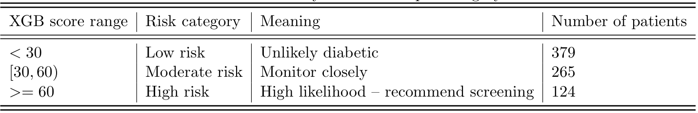
The risk scores have been validated and we found out that the high-risk group has high diabetes
prevalence where as the low-risk group has low prevalence thereby confirming the suitability of
XGBoost for screening programs.
For employing Nonnegative Matrix Factorization (NMF) on Pima, the first thing to do is to prepare the data matrix.
This starts with selecting the feature columns of the data (all except Outcome) and ensuring non-negativity by
applying the MinMaxScaler(). Eventually, fit NMF after choosing an appropriate rank k and create proper data
frames for the factors W and H.
For choosing the 'optimal' number of clusters k, we first employed the elbow method and obtained k = 5 as a
starting value.
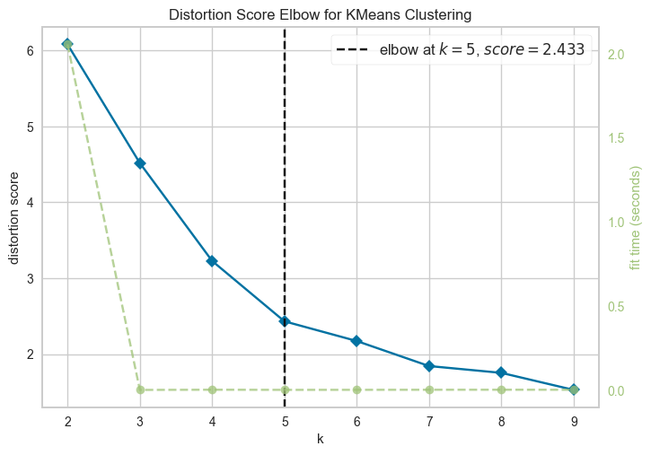
With the help of the above method, five latents (hidden features) were identified and depicted in the above figure and
described in the following table.
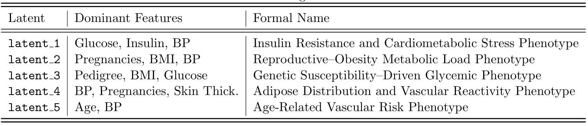
The practical interpretation is that one needs to do screening as: High latent_1 --- immediate glucose testing,
High latent_3 --- family-history-based screening, High latent_4 --- lifestyle intervention.
NMF and XGBOOST + SHAP are complimentary not competing. The table below presents what each method explains.
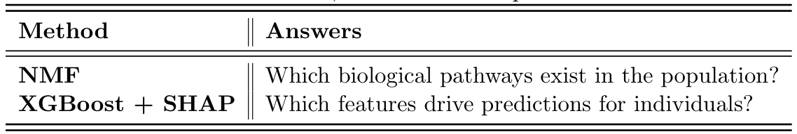
The table below maps NMF phenotypes with SHAP features. The insight we get from this table is that SHAP confirms what NMF discovered structurally but
SHAP is based on feature-level while NMF is based on pathway-level.
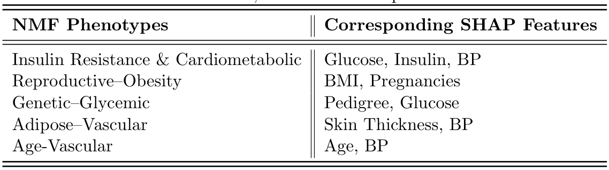
Employing the highest silhouette score strategy, on top of the elbow method, provided k=3 as the best value for the
number of clusters, see the figure below which contains the numerical values of the latent cluster phenotype profiles.
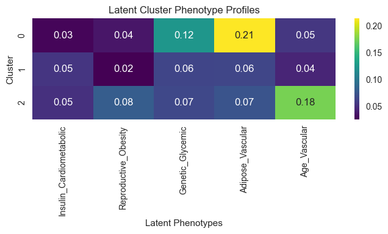
Cluster 0: Adipose_Vascular phenotype: dominant latents are BP, Skin Thickness and Pregnancies. This means
individuals in this cluster are often prediabetic or the diabetes is at early stage.
Cluster 1: Genetic_Adipose mixed phenotype: dominant latents are Genetic_Glycemic and
Adipose Vascular meaning this a copound-risk group having strong genetic susceptibility and elevated glucose.
These patients may develop diabetes with less obesity and moderate BMI.
Cluster 2: Age-related vascular phenotype: dominant latent is Age_Vascular which means this cluster reflects
aging-related insulin sensitivity decline, vascular stifness and diabetes risk driven by age.
Experimenting on diabetes prevalence per cluster revealed that Cluster 1 shows highest diabetes rate
while Cluster 0 and 2 exhibit moderate and moderate to high (depending on age) diabetic behaviour, respectively.
In this section, we will explain how XGBOOST behaves inside each NMF phenotype (cluster).
Below we provide the extracted dominant features from each cluster.
For Cluster 0
(early Adipose_Vascular dysregulation) we have:
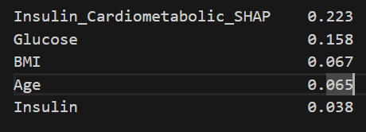
The above results mean, in Cluster 0, diabetes risk is driven by physiological insulin resistance,
not lifestyle or aging yet. This is ideal for early detection and prevention.
For Cluster 1 (genetically primed metabolic diabetes), we have:
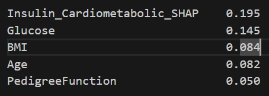
The above results tell us that patients in this cluster are genetically primed,
lifestyle alone may not fully mitigate risk. Supports family-based screening and early pharmacologic prevention.
For Cluster 2 (age-associated vascular diabetes), we have:
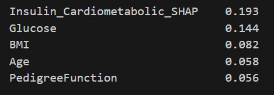
The above results mean, in Cluster 2, risk emerges from age-related insulin sensitivity
decline rather than obesity alone. Focus on vascular protection and moderate glycemic control.
One can observe that the patterns look similar and might wonder why. This is because all clusters involve type-2
diabetes, and glucose and insulin are unversal indicators. Clusters only differ in relative emphasis,
not feature exclusion. This indicates that phenotypes differ in why diabetes develops, not what diabetes is.
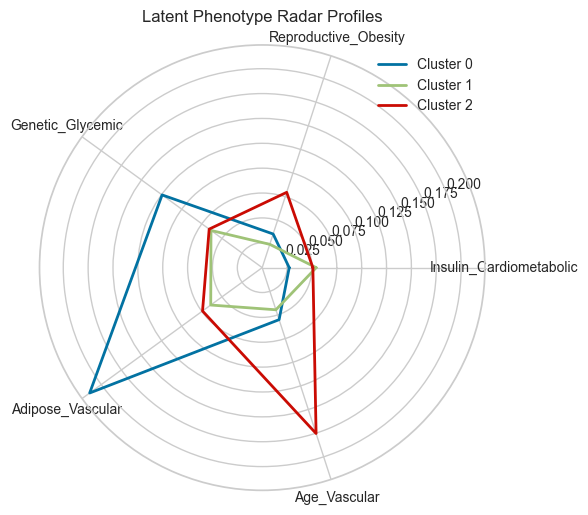
The radar plot of phenotypes in the above figure indicates that each cluster has a distinct shape,
overlaps show shared vascular stress and separate regions reveal different diabetes mechanisms.
Cluster 0: Early Adipose-Vascular Dysregulation
Primary Risks
1. Fat distribution
2. Blood pressure
3. Pregnancy-related metabolic strain
Interventions
1. Weight management (moderate, not aggressive)
2. Blood pressure control
3. Post-pregnancy metabolic monitoring
4. Lifesyle intervention --- medication
Cluster 1: Genetically Primed Metabolic Diabetes
Primary Risks
1. Family hitory
2. Hyperglycemia at lower BMI
Interventions
1. Early glucose monitoring
2. Preventive pharmacotherapy
3. Family-based screening
4. Lifestyle alone may be insufficient
Cluster 2: Age-Associated Vascular Diabetes
Primary Risks
1. Aging vasculature
2. Blood pressure
Interventions
1. Cardiovascular risk management
2. Moderate glycemic control
3. Avoid overly aggressive weight loss
4. Monitor renal and vascular function
Latent phenotype clustering revealed three clinically interpretable diabetes sub-types,
each associated with distinct risk profiles and predictive feature importance patterns.
Cluster-specific risk scores and SHAP analyses demonstrated that supervised model
decision logic varied meaningfully across phenotypes, supporting the utility of
phenotype-aware risk stratification and targeted intervention strategies.
In general, PCA is about variance compression while NMF is about latent risk factor discovery.
Our experiments reveal that PCA optimizes variance whereas NMF optimizes additive reconstruction.
These two are not directly comparable numerically, only conceptually.
Experiments done regarding component loadings reveal that PCA results contain mixed signs (+ and -)
leading to cancelation of features with each other, and it also failed to provide clean phenotype.
On the otherhand, NMF loadings were found to be clinically interpretable. Results from NMF-based
experiments show that there are only positive contributions facilitating additive reconstruction.
Moreover, clear dominance patterns were obsered like Glucose + Insulin, BMI + SKinThickness,
and Age + Pregnancies.
In conclusion, while PCA captured a larger fraction of total variance, its components mixed positively
and negatively contributing clinical features, limiting interpretability. In contrast, NMF produced
non-negative, additive latent factors corresponding to clinically coherent metabolic phenotypes.
Despite similar predictive performance, NMF offered superior interpretability and phenotype stability,
making it more suitable for risk stratification and intervention design.
The final verdict of the comparison is presented in the following table:
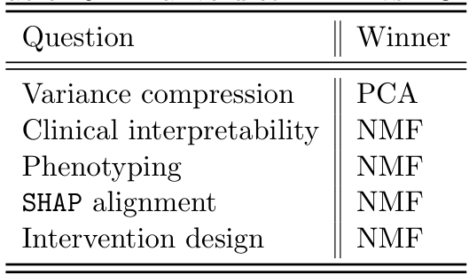
We have found the following:
1. XGBoost is found to be the winner (compared to LR and RF) because of the following reasons:
i. it provides the best recall score --- very useful for early detection
ii. it makes very good use of the non-linearity effects, i.e., combined effects of the features
iii. it facilitates high quality SHAP explanations
iv. its results are clinically trust worthy
2. Glucose is the dominant early biomarker, it pushes strongly towards diabetes
3. Combined (non-linear) risk amplification is revealed by high BMI + older Age
4. The recommended data-driven, clinically interpretable screening policy which
optimizes early-detection is presented in the table below:
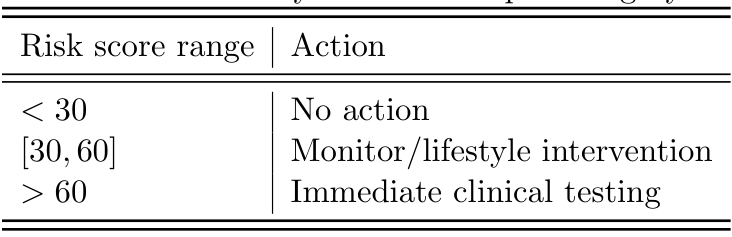
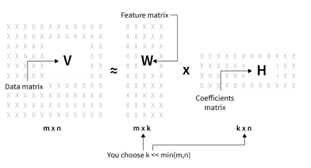
1. NMF in combination with the elbow method revealed five (k=5) latent metabolic phenotypes underlying
diabetes risk, highlighting the heterogeneous pathways through which Type 2 diabetes develops
in the Pima Indian population.
2. BP appears in many NMF clusters indicating that it is a systemic stress indicator, it is
linked to insulin resistance, obesity, age and pregnancy.
3. BP is a shared downstream effect of
metabolic dysregulation. NMF correctly uses it as a cross-cutting amplifier, not a driver.
4. NMF based cluster-specific analyses demonstrated a shared core decision pathway
dominated by insulin-glucose dynamics across all phenotypes.
5. NMF enabled to learn that secondary feature contributions varied by cluster, with genetic susceptibility
contributing more prominently in genetically primed individuals and age exerting greater influence
in age-associated phenotypes.
6. NMF and silhouette score based latent phenotype clustering revealed three (k=3) clinically interpretable diabetes sub-types,
each associated with distinct risk profiles and predictive feature importance patterns.
7. Experimenting on diabetes prevalence per cluster revealed that the Genetic-Adipose cluster shows highest diabetes rate
while Adipose-Vascular and Age-Associated-Vascular clusters exhibit moderate and moderate to high (depending on age) diabetic behaviour, respectively.
8. Cluster-specific risk scores and SHAP analyses demonstrated that supervised model decision logic
varied meaningfully across phenotypes, supporting the utility of phenotype-aware risk stratification
and targeted intervention strategies.
9. It is recommended to use NMF for phenotypes, risk scores and clustering but mention PCA only
as a baseline, not main method.